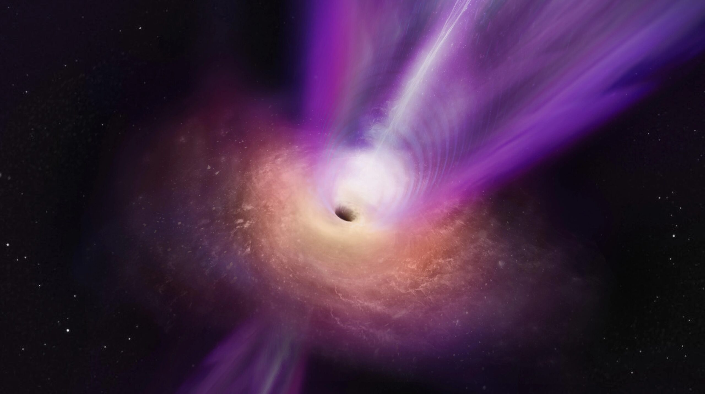
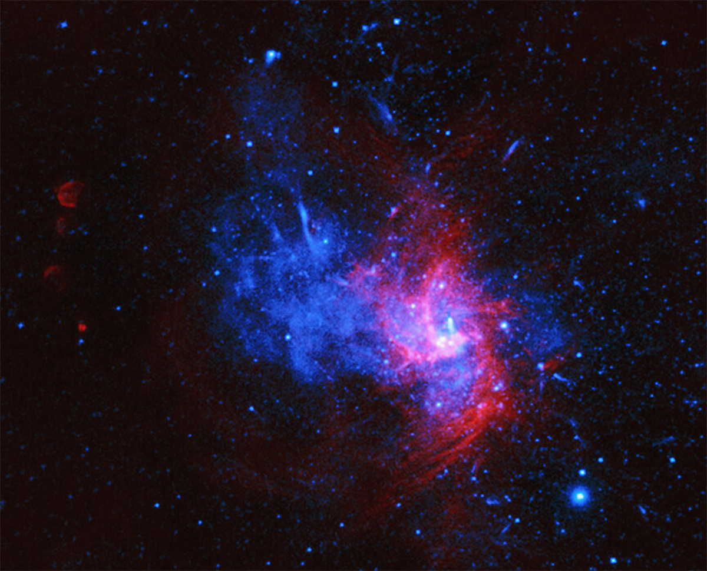
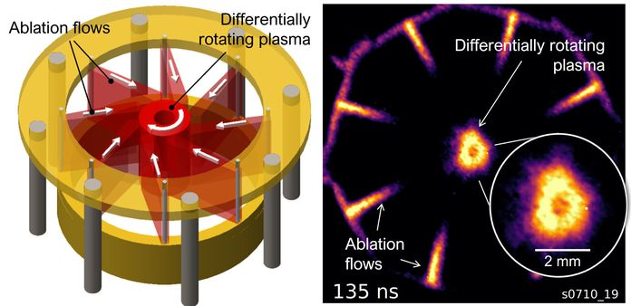

🕳️ АНОМАЛІЇ ПРОСТОРУ-ЧАСУ
ОБ'ЄКТ: Чорна діра — область простору-часу, гравітаційне тяжіння якої настільки велике, що навіть світло не може її покинути.
МОНІТОРИНГ: Спостереження ведеться через аналіз рентгенівського випромінювання та викривлення орбіт сусідніх зірок.

Чорна діра M87

Стрілець A* (Центр нашої Галактики)

Симуляція акреційного диска